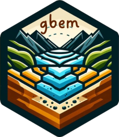

Gravel-Bed River Bank Erosion Model
gbem.RdRuns the GBEM algorithm to determine erosion of a channel cross section from a supplied event hydrograph.
Value
A list of the following components:
dw_pred: predicted widening.dw_const: change in width constrained by transport capacity, the mostv_b: transport capacity * time. Volume of transport that can be moved by the river.cross_section: The original cross section.event: A discretized event hydrograph with erosion widths and volumes at each time step.
Details
The hydrograph is first discretized into niter constant flows,
and the GBEM algorithm is iterated on those flows.
Examples
cs <- cross_section(9, grad = 0.02, d50 = 45, d84 = 90, roughness = 0.01)
hg <- hyd_snow(15, baseflow = 5)
g <- gbem(hg, cs)
erode(g) # Erosion occurs
#> Channel with width 25.4701892445638
ch_width(cs) <- 100
erode(gbem(hg, cs)) # No erosion
#> Channel with width 100